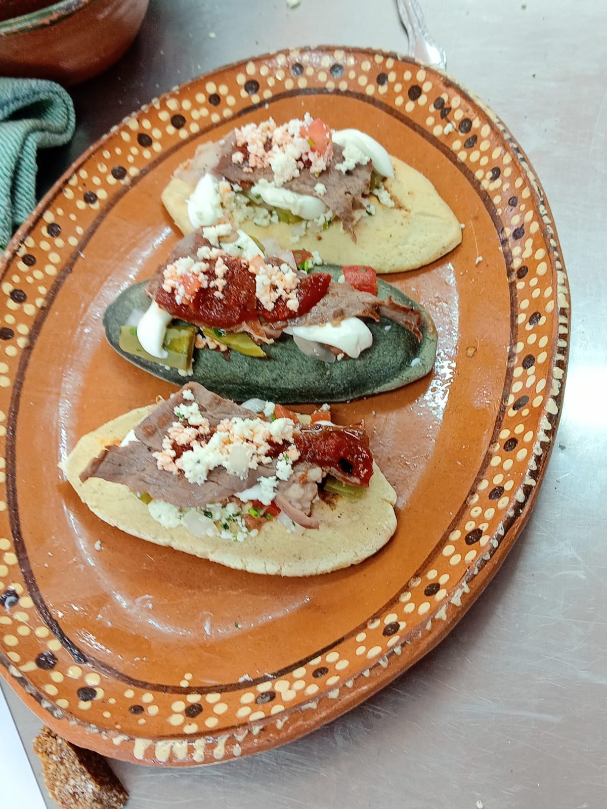
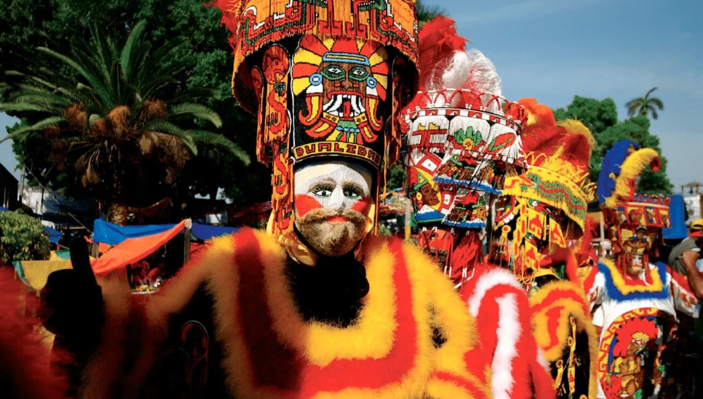
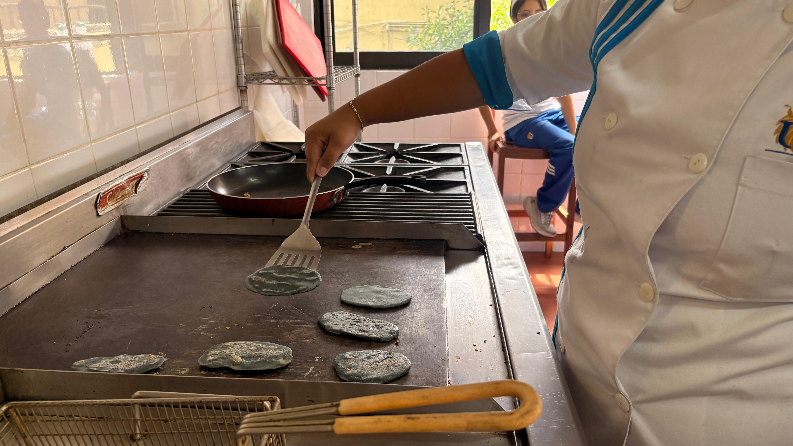
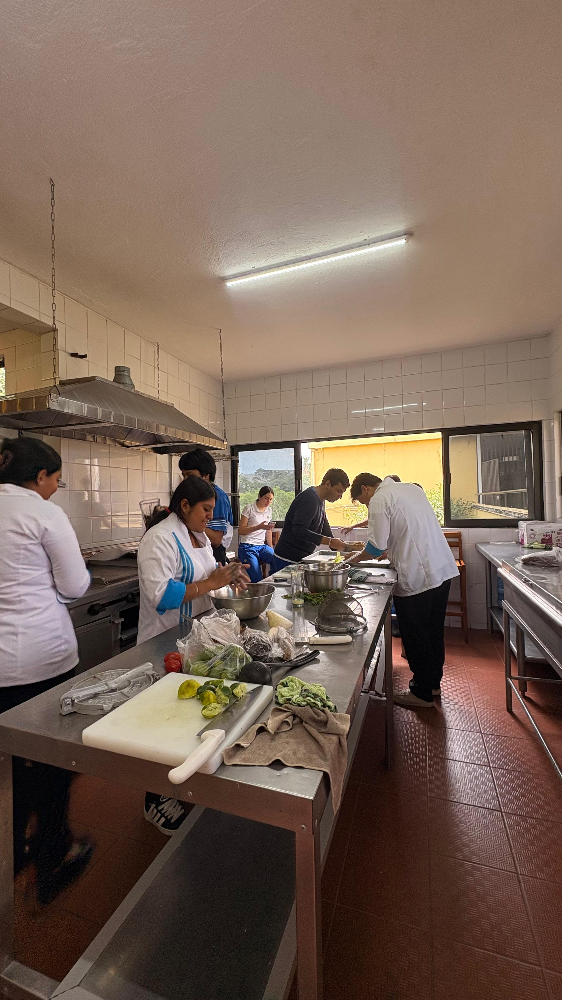
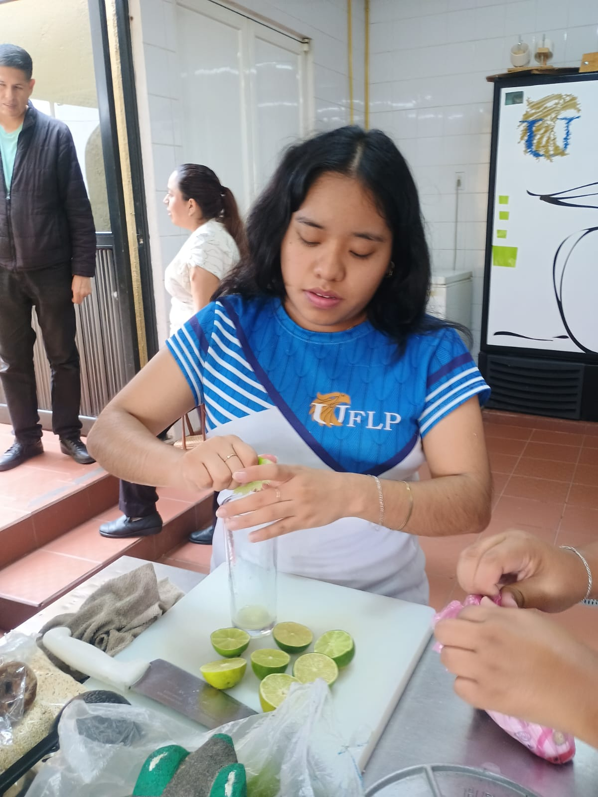
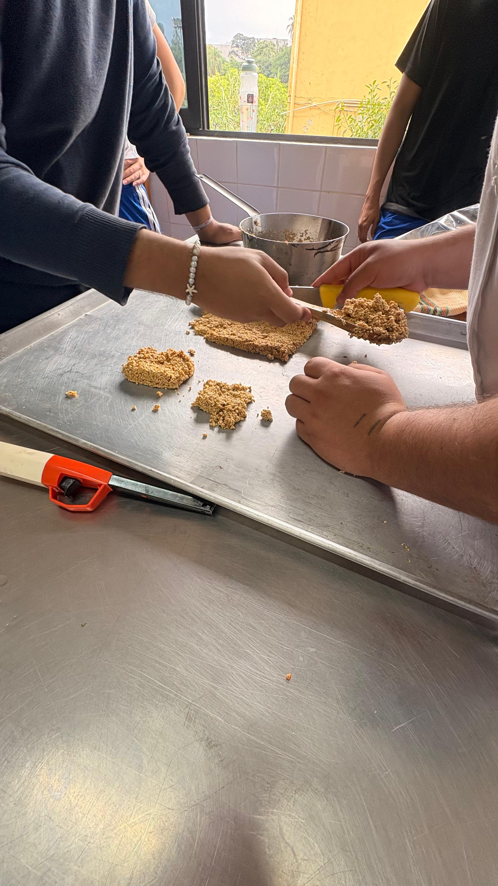
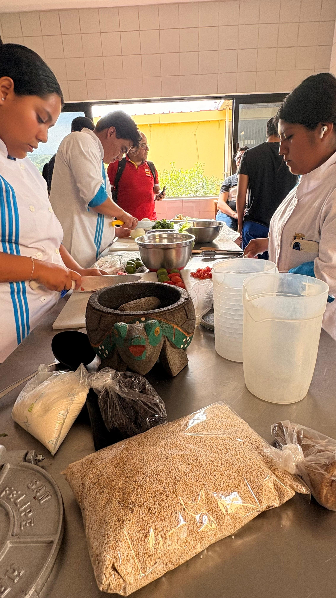

Los estudiantes realizaron la gestión y vinculación con distintas secretarías, dependencias gubernamentales e instituciones públicas, con el propósito de obtener respaldo, colaboración y apoyo para la realización del festival. Estas acciones permitieron fortalecer la coordinación interinstitucional necesaria para el éxito del evento.
Se estableció contacto con artesanos y artesanas de diferentes municipios del estado, invitándolos a participar como expositores para mostrar y comercializar sus productos, contribuyendo así a la promoción del talento local y al fortalecimiento de la economía cultural de las comunidades participantes.
Los estudiantes llevaron a cabo una investigación de campo mediante recorridos, viajes y visitas a comunidades pertenecientes a las siete regiones culturales de Morelos. Esta labor permitió recopilar información relevante sobre las tradiciones, costumbres, manifestaciones artísticas, gastronomía y patrimonio cultural de cada zona, enriqueciendo la propuesta temática del festival.
Los alumnos participaron en la planificación, organización y logística general del evento, colaborando en la programación de actividades y en la coordinación de los distintos espacios del festival.
Como complemento, elaboraron y presentaron degustaciones gastronómicas de alimentos y bebidas tradicionales del estado de Morelos, ofreciendo a los asistentes una muestra representativa de la riqueza culinaria morelense.
Gracias a estas acciones, el proyecto "Festival Ishmati: Morelos Unido por su Cultura" se consolidó como una iniciativa que fomenta el reconocimiento, la valoración y la difusión de la identidad cultural de Morelos, al tiempo que permitió a los estudiantes aplicar de manera práctica los conocimientos adquiridos durante su formación académica.